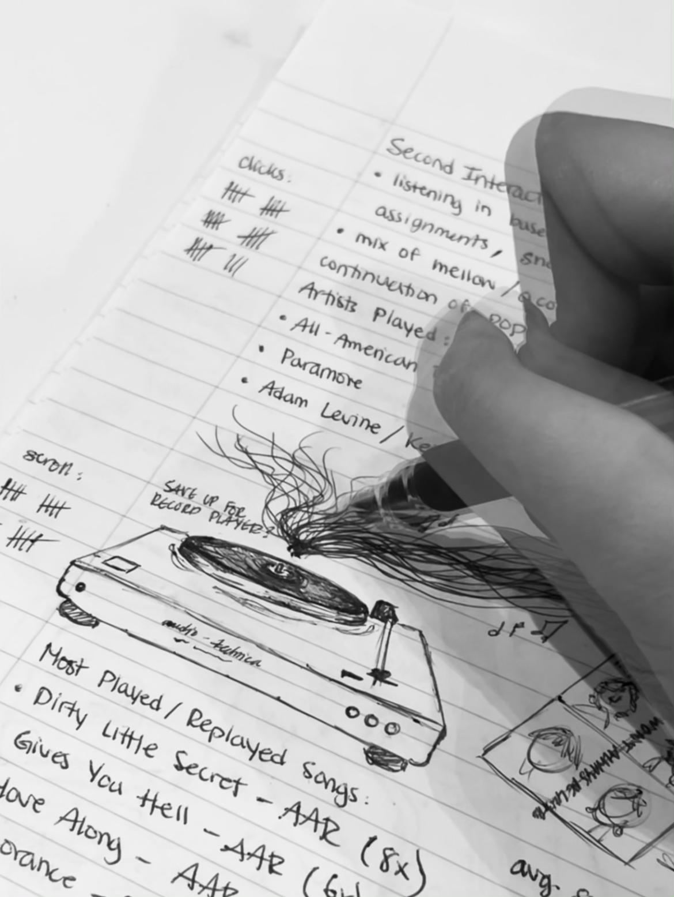

An infographic showcasing my interaction with the music streaming service Spotify.
A collective of sketches and notes documenting the quantitative and qualitative information during my interactions with the app. I would document my interactions starting with recording the date, time, and location. Followed by the genre of music I am in the mood to listen to with notes to explain my reasoning. Also recording notes of emotions, thoughts, and sketches made while listening to the music. Tracked artists I listened to, most played songs, and clicks and scroll counts.
Clicks would partain to things such as: shuffle, skip, replay, play, and pause. Scroll would account for the times I've added a song to the queue, scrub through the song, and scrolled through an album, single, or EP.
A series of screenshots documenting my listening history from May 1 to May 2.

A rough layout sketch and a series of images to be used in a mini collage at the bottom of the inforgraphic.
The first photo is an image of myself listening to music with my headphones where you can see a faint, blurry sihouette of my face.
The second photo is my finger scrolling through the Spotify app on my iPad.
The third photo is of my pen sketches while I was immersed in the music; just sketching what I thought or felt.
